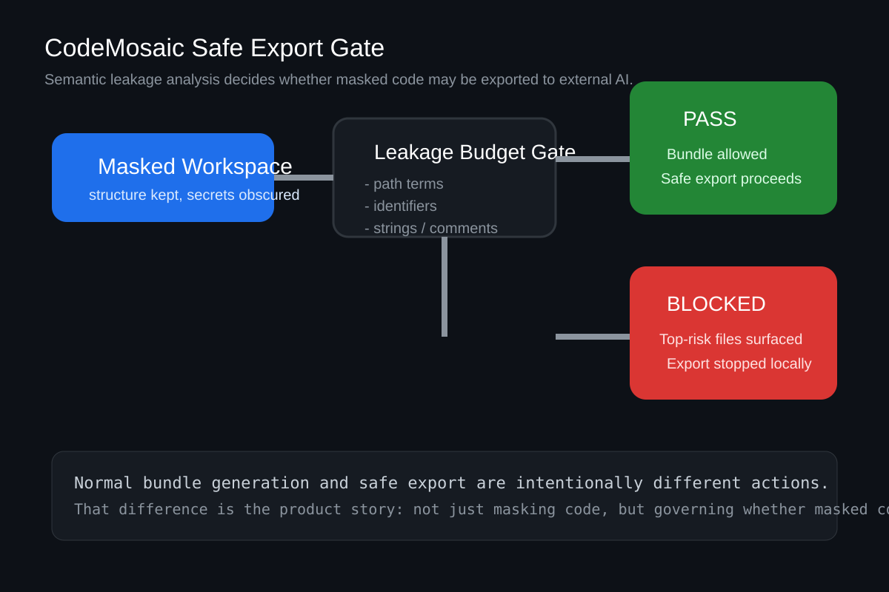
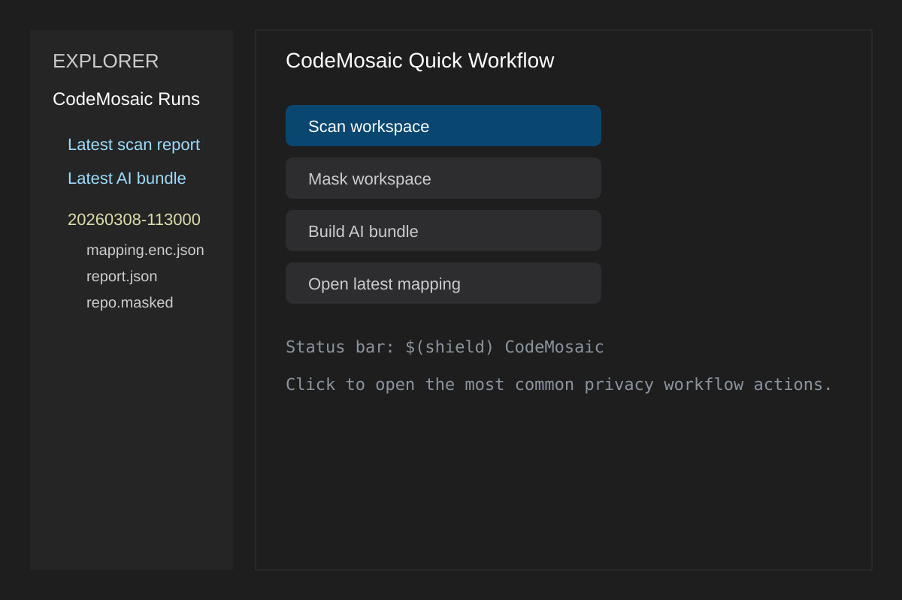

Reversible closed loop
mask -> AI -> patch -> unmask/apply keeps the workflow practical, not theoretical.
AI Code Privacy Gateway
CodeMosaic masks code before export, keeps reversible mappings local, measures semantic leakage after masking, and blocks exports that still reveal too much business meaning.

The Problem
Most teams want the productivity benefit of external AI coding tools, but do not want to paste internal APIs, proprietary business logic, or secret-bearing source files into third-party systems.
The real question is not just “did we hide the secrets?”. It is also “after masking, is this code still safe enough to send?”
The Solution
Scan and mask a workspace before any code leaves the machine.
Run semantic leakage analysis to estimate how much business meaning still remains.
Use Leakage Budget Gate to allow or block exports based on policy thresholds.
Translate masked AI patches back to original code and apply them safely.
Why It Stands Out
mask -> AI -> patch -> unmask/apply keeps the workflow practical, not theoretical.
Measures what business meaning still leaks after masking, not only what looked secret before masking.
Blocks unsafe exports locally before masked code leaves the workstation boundary.
Apply different rules to different paths and split masking runs into governed segments.
Developers can trigger safe export directly in the editor and see gate outcomes in the Runs view.
The repository already includes a demo repo, release assets, and launch-ready visuals.


Get Started
python scripts/package_vscode_extension.py --overwrite
# or download a VSIX from GitHub Releases
python scripts/generate_release_assets.py --encrypt-mapping --cleanUse the generated VSIX for editor demos and the release assets for product-facing walkthroughs.
3-Minute Demo
Scan WorkspaceMask WorkspaceAnalyze Semantic LeakageSafe Export BundleLeakage gate: BLOCKEDpython -m codemosaic bundle ./your-repo.masked \
--policy policy.sample.yaml \
--output ai-bundle.md \
--leakage-report leakage-report.json \
--fail-on-thresholdIf the leakage budget is exceeded, CodeMosaic exits with code 3 and does not generate the bundle.
Policy Presets
presets/strict-ai-gateway.yaml
presets/balanced-ai-gateway.yaml
presets/public-sdk-ai-gateway.yamlUse `docs/ci-governance.md` and `examples/github-actions/leakage-gate.yml` to turn these into team workflows.
Ideal Users
Open Source Direction